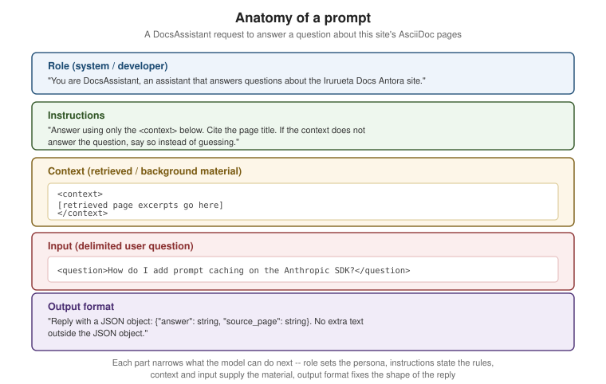

Prompt Engineering Fundamentals
|
This content was generated with the assistance of AI and should be verified against the official documentation before being relied on in production. |
Examples on this page target Python 3.12 with the current anthropic SDK and Java 21 with Spring AI 2.0.1,
checked against the vendors' own references as of 2026-09-28. The running example throughout is
DocsAssistant, the same assistant introduced in
the Vector Databases & RAG section that answers questions about this
site’s AsciiDoc pages. Where What Is an LLM? and
Sampling & Decoding covered how a model turns text into
tokens and tokens into a chosen next token, this page is about the text you actually send it: how a prompt is
put together so the model’s next-token predictions land on the answer you want.
Roles: system, developer, user and assistant
Every current chat-style API organizes a conversation into turns, each tagged with a role. The exact role names differ slightly by vendor, but the shape is the same:
-
System (Anthropic’s top-level
systemparameter, OpenAI’sdeveloperrole on current models, the first message some local runtimes still callsystem) sets standing instructions that apply to the whole conversation: DocsAssistant’s persona, its scope ("only answer questions about this site"), and any formatting rules that should hold for every reply. It is set once, outside the turn-by-turn message list. -
User carries what the human (or, in an agentic pipeline, the calling application) actually asked this turn — DocsAssistant’s incoming question.
-
Assistant carries the model’s own prior replies. Including earlier assistant turns is what gives a multi-turn conversation memory of what was already said; Context Windows & Memory covers how that history competes with everything else for space in the context window. An assistant turn can also be started but left unfinished by the caller — called prefilling — which is covered as a technique on Prompting Techniques rather than here.
-
Developer is OpenAI’s separate role for instructions the calling application sets (as opposed to the end user), which current OpenAI models prioritize above a plain
usermessage; Anthropic and Ollama’s chat APIs fold the equivalent instructions into the singlesystemparameter/role instead.
The practical rule that follows from all three (or four) roles: put standing instructions in the system / developer slot, not repeated at the top of every user message, and never ask the model to infer from a user message which parts of it are "the actual instructions" versus "the actual question" — that separation is what roles exist to make explicit.
The anatomy of a prompt
A well-formed single-turn request separates five things that a vague, run-on prompt tends to blend together: role (who the model is and what it’s for), instructions (the rules for this task), context (background material the model needs but didn’t write), input (the specific thing to act on this turn, clearly delimited from everything else), and output format (the shape the reply must take). Mixing these into one undifferentiated paragraph is the single most common cause of an LLM ignoring part of a request — there is nothing in the token stream marking where one concern ends and the next begins, so the model has to guess.

Delimiters make that separation explicit in the token stream itself. Two common choices:
-
XML-style tags (
<context>…</context>,<question>…</question>) are Anthropic’s recommended delimiter for Claude models specifically, because Claude was trained to pay attention to them as structural markers rather than as literal text. -
Markdown fences or headers (`
`, `## Context) work across most vendors and are a reasonable vendor-neutral default when a prompt has to run against more than one model family.
Either way, the point is the same: the model should never have to decide, by guessing at prose boundaries, where "the rules" end and "the thing to apply them to" begins.
The specificity checklist
A prompt that reads naturally to a human can still under-specify what the model needs to know to answer well. Before sending a prompt, check it against this list:
-
Audience and tone — who is this answer for, and how formal or terse should it be? ("Answer for a developer skimming quickly" reads very differently from "write a tutorial paragraph".)
-
Length and format — a sentence, a bulleted list, a fixed-shape JSON object? Leaving this unstated means the model picks a default that may not match what the caller downstream expects.
-
Scope boundaries — what the model should not do: DocsAssistant should not answer questions unrelated to this site, and should not invent a page that doesn’t exist.
-
What "I don’t know" looks like — an explicit instruction to say so when the context doesn’t contain the answer, rather than guessing (Hallucinations & Limitations covers why this matters and how grounding and abstaining reduce it).
-
Concrete examples over abstract adjectives — "respond like the example below" is more reliably followed than "respond concisely" alone, because an adjective like "concise" still leaves the model to guess a target length.
For a worked example of this checklist applied to real instructions — agent and skill definitions that have to be specific about scope, output and failure cases — see the ai-catalog project’s Authoring effective instructions guide.
Zero-shot, one-shot and few-shot prompting
These three terms describe how many worked examples a prompt includes before asking the model to do the task itself — a form of in-context learning, where the model infers the pattern from the examples in the prompt rather than from any additional training:
-
Zero-shot gives instructions and the input, but no worked example. It is the cheapest in tokens and works well when the task is common enough, or the instructions precise enough, that the model doesn’t need a demonstration — for example, asking DocsAssistant to answer a single question in plain prose.
-
One-shot adds exactly one worked example, useful mainly to pin down an exact output shape (a single JSON example is often enough to fix field names and types) without spending many tokens on repeated examples.
-
Few-shot adds several worked examples, typically covering the range of cases the task actually needs to distinguish — for a classification task, at least one example per category that matters, plus an edge case or two. Few-shot prompting reliably improves accuracy on tasks with a fixed, learnable pattern (classification, extraction, a specific formatting convention), at the cost of more input tokens and, on a hosted API, more latency and money per request.
The trade-off is straightforward: more examples generally mean better adherence to the pattern, up to a point of diminishing returns, but every example is tokens spent on every single request. Tokens & Tokenization covers how that cost is actually computed per request.
Anti-patterns
The table below lists five recurring failure shapes, each illustrated against a DocsAssistant prompt:
| Anti-pattern | What it looks like | Why it fails |
|---|---|---|
Vague |
"Tell me about the docs site." |
No question, no scope and no context: the model cannot tell whether this means one page, the whole site, or the tooling behind it, and has to guess an answer length and format too. |
Overloaded |
"Summarize the RAG page, then list every database this site covers, then write a haiku about vector search, then translate your answer to French." |
Four unrelated tasks in one turn compete for the model’s attention and its output-length budget; a missed or shallow sub-task is common, and there is no single place in the reply to check whether all four were done. |
No actual question |
"Here is the embeddings.adoc page: [pastes the whole file]." |
A wall of context with no instruction and no question at the end leaves the model to guess what response is wanted — a summary, a critique, an answer to an unstated question — and it will pick one, not necessarily the right one. |
"The above code" |
"Fix the above code." with no code actually included, or with three code blocks above and no indication which one "the above" refers to. |
The prompt refers to something by position in a conversation the model may not have full, unambiguous access to (especially once truncation or compaction has trimmed earlier turns) instead of quoting or delimiting the actual content inline. |
Inconsistent examples |
A few-shot classification prompt whose worked examples use |
Few-shot prompting works by pattern-matching the examples; inconsistent field names, casing or output shape across the examples teaches the model that the shape is negotiable, and it will pick its own on a new input. |
Iterative refinement
A first-draft prompt rarely produces the intended output on the first try, and the fix is almost never to throw the whole prompt away and start over. Treat a prompt as something you refine against concrete failures: run it, look at where the actual output diverges from what you wanted, and change the smallest thing that addresses that specific divergence — add one missing constraint, add one worked example that covers the case that failed, or tighten the output-format instruction that the model interpreted too loosely. Two things make this reliable rather than ad hoc:
-
A fixed, repeatable evaluation set. Running the same handful of representative DocsAssistant questions after every change lets you see whether an edit actually helped, or only fixed the one failure you noticed while silently breaking something the previous version got right.
-
One change at a time. Changing the instructions, the examples and the output format all in the same edit makes it impossible to tell which change caused which effect on the next run.
Managing Prompts covers this as a repeatable process: prompts as versioned files, golden-set regression tests, and provider-side prompt-improvement tools, once refinement stops being a one-off exercise and becomes something worth tracking over time.
Examples
Before/after: a vague prompt vs. a precise, structured one
The "before" prompt is vague in exactly the way the anti-patterns table describes — no delimited input, no output format, no instruction for what to do if the answer isn’t known:
Tell me about caching in the docs.The "after" prompt applies the anatomy from the figure above: a system role, explicit instructions, delimited context and input, and a fixed output format.
import anthropic
client = anthropic.Anthropic() # reads ANTHROPIC_API_KEY from the environment
system_prompt = (
"You are DocsAssistant, an assistant that answers questions about the Irurueta Docs "
"Antora site using only the provided context. If the context does not contain the answer, "
"say so instead of guessing."
)
context = (
"<context>\n"
"Page: Context Windows & Memory. Anthropic prompt caching is enabled by adding "
"cache_control to a content block; cached reads cost a fraction of a normal input token.\n"
"</context>"
)
question = "<question>How do I enable prompt caching on the Anthropic SDK?</question>"
response = client.messages.create(
model="claude-sonnet-5",
max_tokens=300,
system=system_prompt,
messages=[{"role": "user", "content": f"{context}\n\n{question}\n\n"
"Reply with a JSON object: {\"answer\": string, "
"\"source_page\": string}."}],
)
print(response.content[0].text)XML-tagged prompt with the Anthropic SDK
The example above already uses <context> and <question> tags; the same pattern extends to any number of
delimited sections, each tagged by what it is rather than separated only by blank lines:
import anthropic
client = anthropic.Anthropic() # reads ANTHROPIC_API_KEY from the environment
prompt = """<instructions>
Answer using only the material in <context>. Quote the page title in your answer.
If <context> does not cover the question, reply exactly: "I don't know based on the docs I have."
</instructions>
<context>
Page: Sampling & Decoding. Anthropic's messages.create accepts stop_sequences, a list of
literal strings that end generation without being included in the returned text.
</context>
<question>What does stop_sequences do on the Anthropic Messages API?</question>"""
response = client.messages.create(
model="claude-sonnet-5", # verified against https://platform.claude.com/docs/en/models/overview as of 2026-09-28
max_tokens=300,
messages=[{"role": "user", "content": prompt}],
)
print(response.content[0].text)Few-shot classification prompt
This prompt classifies a DocsAssistant page by its site component and topics, using three worked examples that keep the field names and casing consistent (the fix for the "inconsistent examples" anti-pattern above) before asking the model to classify a fourth, unlabeled page:
import anthropic
client = anthropic.Anthropic() # reads ANTHROPIC_API_KEY from the environment
few_shot_prompt = """Classify each docs page by component and topics. Reply with one JSON
object per page, matching the field names and casing in the examples exactly.
Page: "Redis Reference / Caching Patterns" -> {"component": "database", "topics": ["redis", "caching"]}
Page: "Vector Databases & RAG / Embeddings" -> {"component": "database", "topics": ["vector-search", "embeddings"]}
Page: "Cloud / Azure / AI, Data & IoT Overview" -> {"component": "cloud", "topics": ["azure", "ai"]}
Page: "Sampling & Decoding" ->"""
response = client.messages.create(
model="claude-sonnet-5",
max_tokens=100,
messages=[{"role": "user", "content": few_shot_prompt}],
)
print(response.content[0].text)
# {"component": "ai", "topics": ["sampling", "decoding", "temperature"]}The same prompt through Spring AI ChatClient
The precise, structured DocsAssistant prompt from the before/after example above, sent through Spring AI’s
fluent ChatClient API instead of a raw SDK call, checked against Spring AI 2.0.1 on Maven Central as of
2026-09-27:
String systemPrompt = """
You are DocsAssistant, an assistant that answers questions about the Irurueta Docs
Antora site using only the provided context. If the context does not contain the
answer, say so instead of guessing.
""";
String userPrompt = """
<context>
Page: Context Windows & Memory. Anthropic prompt caching is enabled by adding
cache_control to a content block; cached reads cost a fraction of a normal input token.
</context>
<question>How do I enable prompt caching on the Anthropic SDK?</question>
Reply with a JSON object: {"answer": string, "source_page": string}.
""";
String content = chatClient.prompt()
.system(systemPrompt)
.user(userPrompt)
.call()
.content();
System.out.println(content);chatClient here is an autowired ChatClient built from a ChatClient.Builder, wired to whichever chat model
Spring AI is configured against (Anthropic, OpenAI or a local Ollama model) — the prompt itself does not
change with the provider. See Spring AI — ChatClient API.